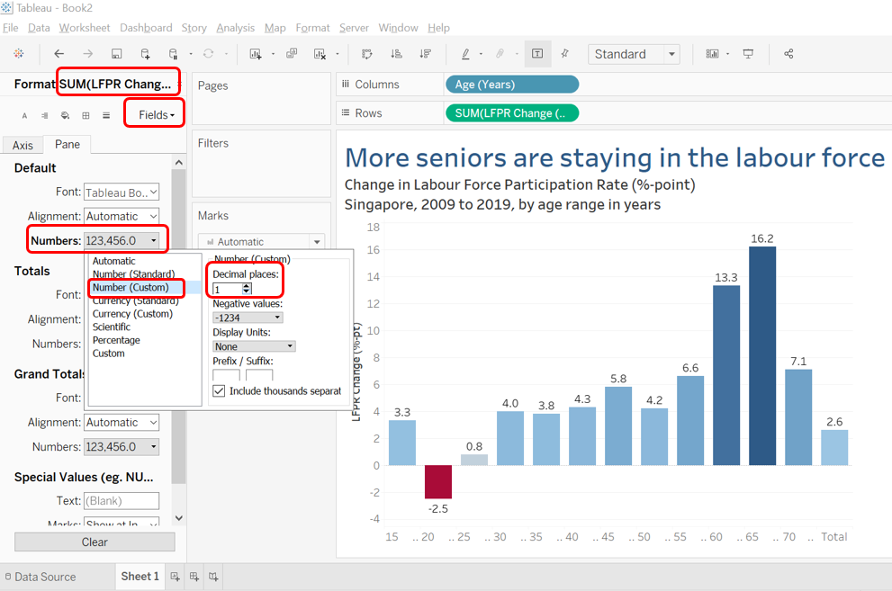
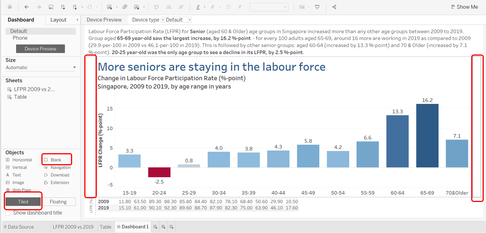
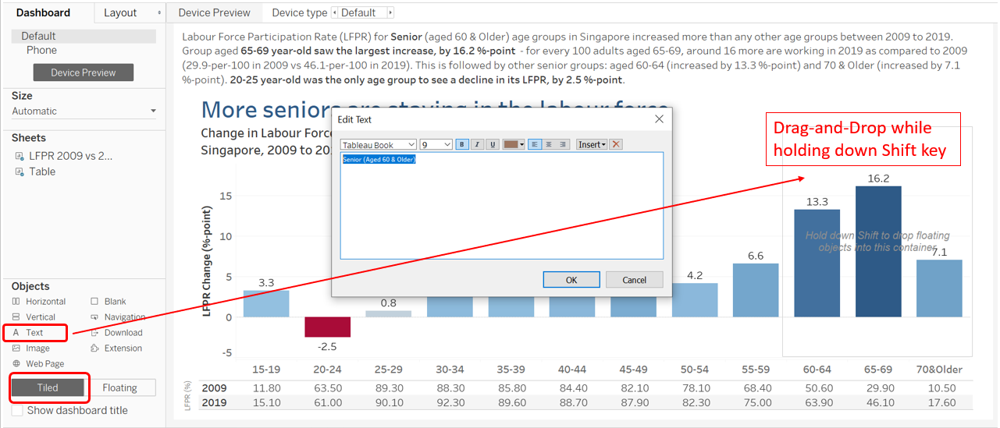
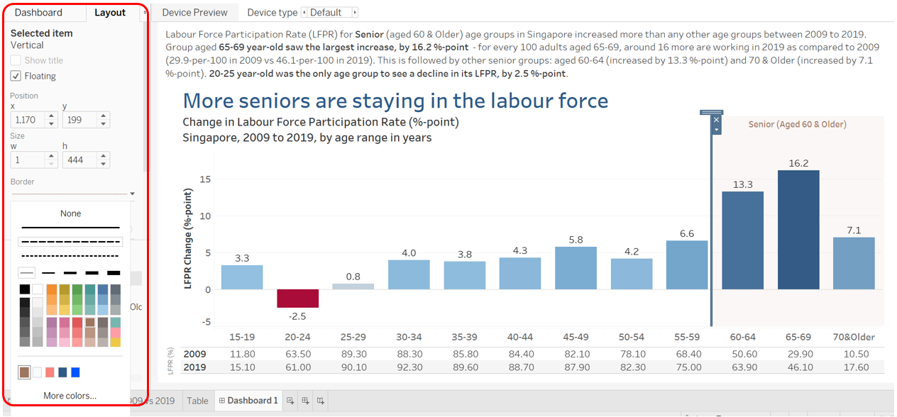

The original visualization presented as Chart 6 on Page 22 of MOMs Report: Labour Force in Singapore 2019 is reproduced below
Figure 1: Original Visualization by MOM, Singapore
Section A: Critique of Original Viz
This section provides a critique of the original visualization and comments on both clarity and aesthetic aspects that could be further improved on. A total of 8 clarity issues and 5 aesthetic issues (as shown below) were identified.
Figure 2: Critique on Original Visualization
Clarity
| S/N | Issue | Comments |
|---|---|---|
| 1 | Title | The purpose and objective of the original visualization was not conveyed well in the title of the chart. It misleads people into thinking that the graph shows absolute number of labour force by age when it is in fact showing the share of each age group within the work force. |
| 2 | Subtitle | Subtitle that says Per Cent does not elaborate on what this per cent is referring to, nor explain which figure is the percentage derived from what base. Together with the title, it confuses viewers on the data being presented. |
| 3 | Axis Label | Missing explanation for the June 2009 and June 2019 row data without reading the paragraph before, there is no easy way to figure out that these numbers refer to share of workers in each age group within the labour force. |
| 4 | Y-Axis | The graphs are literally floating with no Y-axis and its corresponding values (much less any gridlines) to anchor the actual value corresponding to each age group this is as good as drawing random lines and is a critical flaw of the original viz.There is no easy way to know if the lines are corresponding to the correct Y-value even if we are provided with the data. |
| 5 | Choice of Viz Type | Since the data is segregated by discrete age bins, line graph which are more suitable for continuous x-variables, should be avoided to prevent giving false impression that the data is continuous within the bin (e.g.a kink for the 45-49 age, it leaves room for misinterpretation that a downtrend from 45 years old changed to an uptrend at 47 years old). |
| 6 | Comparison Across Year | Since the objective of the visualization is to explain that there are more older workers in the labour force, the choice of two line graphs is inefficient as it requires viewers to do a mental comparison of the higher line to derive the changes over time. Bearing the objective in mind, the difference between the two years could have been calculated and directly presented instead. |
| 7 | Lead-in Paragraph | Lead-in paragraph is not supported by the visualization, in fact, it creates more confusion. While the age bins are split into 5-year bands (e.g.15-19, with the only exception being those above 70), the paragraphs discusses the share of labour force by bigger bins, lumping together those aged 55 and over, as well as the 25-54 groups. This creates confusion as the figures quotes from 16% in 2009 to 25% in 2019 and declined from 75% to 67% are all not interpretable from the visualization. The need for mental sums to add up the percentages across a few data points presented in the table is unintuitive and user-unfriendly. In terms of comparison between the years, author could have also enhance the readability by deriving the change in percentage points across the two years. |
| 8 | Choice of Data | As a general comment to the overall choice of data for the discussion, it might be clearer to talk about the change in Labour Force Participation Rate (LFPR) for each age group, rather than the composition of labour force which could be more indicative of demographic change (e.g.ageing population) than shift in labour decisions. |
Aesthetic
| S/N | Issue | Comments |
|---|---|---|
| 9 | Definition | Visualization appears grainy and pixelated. |
| 10 | Data Points and Labels | No softgrid nor data point to guide visual on which year corresponds to which point |
| 11 | Font Consistency | Inconsistent font colour for same data source blue for the line is different from the blue words on chart, which is again different for the blue in the table below |
| 12 | Choice of Font Colours | Choice of font colour does not contrast with background as well, hence not easy to read |
| 13 | Alignment | Information (Source and Note) at the bottom not aligned |
Section B: Suggested Improvement
This section provides some suggested improvements that could be implemented to resolve issues discussed in Section A.
Clarity
| S/N | Issues | Suggested Improvements |
|---|---|---|
| 1 | Title | The title of the visualization could be modified to reflect the key message that the viz is trying to convey, and should correspond accurately to the main features of the viz |
| 2 | Subtitle | Subtitle could be modified to provide key information to guide viewers in deciphering the viz (e.g.data and corresponding unit presented in the viz, year of data, location, and X-axis variable) |
| 3 | Axis Label | Provide clear axis labels with accurate units of measure to prevent confusing readers |
| 4 | Y-Axis | Inclusion of a Y-axis with suitable tick marks and guiding soft gridlines to enhance readability is important |
| 5 | Choice of Viz Type | For discrete variables (as in the bins of age range used), a bar chart would serve to provide better clarity to prevent misinterpretation |
| 6 | Comparison Across Year | To achieve the objective to explain that there are proportionately more older workers in the labour force in 2019 than 2009, the difference between the two years could have been calculated and directly presented for a more effective visualization. |
| 7 | Lead-in Paragraph | Lead-in paragraph should be supported by the viz, and any figures quoted by the paragraph should be available and obvious from the viz.Better interpretation and processing of the data (e.g.calculating and presenting the difference, if that is the objective) would also enhance clarity of the viz. |
| 8 | Choice of Data | Using data on the Labour Force Participation Rate (LFPR) for each age group could provide clearer comparison to achieve the objective of the viz |
Clarity
| S/N | Issues | Suggested Improvements |
|---|---|---|
| 9 | Definition | Ensure visualization is not pixelated and has suitable definition |
| 10 | Data Points and Labels | Provide clear background gridline to enhance readability and data points/labels for viewers ease of reference |
| 11 | Font Consistency | Ensure consistent font type and colour are used to represent distinct sets of data for consistency. Useful colors will also provide additional dimensions to enhance effectiveness of viz |
| 12 | Choice of Font Colours | To select contrasting colours for ease of reading |
| 13 | Alignment | As much as possible, to provide proper alignment within viz to reduce distraction caused by messiness |
Section C: Redesigned Visualization
This section presents an alternative that improves on the original visualization based on the points discussed in Section A & B.
Makeover Concept
Figure 3: Makeover Concept
Redesigned Viz
The redesigned visualization can be accessed via this link

Figure 4: Redeisgned Visualization
Section D: Step-by-Step for Viz Makeover
This section provides a step-by-step guide to recreate the redesgined visualization.
Step 1 - Download and Import Data
First, download the Resident Labour Force Participation Rate by Age and Sex, 2009 - 2019 (Table 5) file via this link. Then, open Tableau Desktop to connect with the Excel file downloaded.
Step 2 - Data Preparation
Check on the Cleaned with Data Interpreter box for Tableau to assist with data cleaning (if desire, may click on underlined Review the results to see data tables created). Select the T5_T A5:Y18 to extract relevant data. Hide the first column and switch Connection on the top right to Extract (as we will be saving onto Tableau Public, which does not support Live connections). Save the Data Extract.
Step 3 - Data Processing
Once the data are loaded, right-click on blank space under Data tab to select Create Calculated Field. Create a new field named LFPR Change (%-pt) with the formula [2019]-[2009] to create a field that tells us the change in percetage point of the LFPR for each age group from 2009 to 2019.
Step 4 - Simple Viz Set-up
To set up the simple visualization, drag-and-drop the Age (Year) variable into the Column field, and the (aggregated) LFPR Change (%-pt) that we have just created into the Rows field, as well as Label. and Color marks. A simple visualization resembling the final viz is created.
Step 5a - Editing Viz Color
As commented in Section B above, choosing appropriate color is important for a clear visualization - in this case, since we know there are positive and negative changes, we would want red to denote negative, and blue for positive to highlight the contrast. Double click on the Color legend tab, choose the Red-Blue Diverging palette, and check on the Use Full Color Range box.
Step 5b - Adding Informative Title and Subtitle
Similarly, informative title that informs viewer of the vizs main message, as well as accurate subtitle to provide additional information about the data is critical for a good Viz. Double click on the title to edit as shown above (selecting font size 22 for title and size 12 for subtitle, while keeping the default font type; color of the title may also be changed to provide contrast)
Step 5c - Other Cosmetic Changes 
We then hide the field labels for columns by right-clicking on the label and selecting the hide option, and also hide the color bar card by clicking on the triangle at the top-right-hand corner of the card and selecting Hide Card. Next, we right-click on the blank space on the viz and select Format to trigger the Format pane - on the Fields dropdown bar, select SUM(LFPR Change (%-pt)). Under Default, click on drop-down for Numbers, select Number (Custom) and change decimal places to 1 - this will change the percentage point changes to 1 decimal place. Under the same Default category, change the font size to 10, Similarly, switch the tab from Pane to Axis on the Format panel, and switch the default font to size 10 and Bold the font.
Step 5d - Alias for X-Axis
We may notice that the X-axis label has large spacing between the two fringe of age range - return to the Data Source Sheet, right-click on the age column, select Edit Aliases and proceed to remove spacing for all age bins. For the last bin, change to 70&Older.
Step 5e - Remove Total
Lastly, since Total does not provide meaningful information here, we right-click on it and select Exclude to exclude this data.
Step 6 - Basic Viz
That completes the set-up of the basic visualization. Remember to give the Worksheet a name and save the Tableau Workbook. Next, we will create a table that shows supporting data on LFRP for each age group in 2009 and 2019. This will provide more information for the visualization that will be useful when making observations.
Step 7a - Supporting Tables Set-Up
Create a new Tableau Worksheet. Drag-and-drop Age (Years) into the Columns field, aggregated 2009 and 2019 data points into the Text Mark (as shown above), click on Show Me on the top-right hand corner of the viz and select the Data Table Viz. Next, click on the Swap Rows and Columns button on the panel above (or press Ctrl+W)
Step 7b - Supporting Tables
As a final step for the supporting data table, exclude the Total column as shown above.
Step 8a - Dashboard Setup
To incorporate various layout elements, create a new Dashboard on Tableau. Drag-and-drop the first Worksheet and then stack the Table worksheet below. Hide the Field Labels for Columns and the Axis label for the table by right-clicking on them individually and selecting the respective hide options. On the Dashboard panel on the left, resize the Dashboard to fit automatically be selecting the Automatic option under Size dropdown menu.
Step 8b - Lead-In Paragraph
Add a Tiled Text object (from the bottom left corner as shown above) by drag-and-dropping a text object above the main Viz worksheet (i.e.top of the dashboard viz). Include the write-up as shown to explains the visualization and enhance the readability by highlighting some key/obvious findings corresponding to the viz.
Step 8c - Axis Label for Supporting Table
A good visualization should be clearly labeled - add in another text object to the left of the supporting data table at the bottom to inform viewer of the data being presented in the table, along with the unit of measure. Resize the text object and format it accordingly as shown.
Step 8d - Appropriate Spacing 
Appropriate spacing to indent different section of a viz enhances its overall readability - include Blank objects at appropriate space and readjust elements to create well-aligned viz.
Step 9a - Drawing Viewers Attention
To accentuate the key message found in the lead-in paragraph, it might even help to conscientiously draw viewers attention to a particular segment of the viz.To achieve this, we first create a floating Vertical object and place it above the bars showing where the Senior age groups are.
Step 9b - Define Terms 
Making use of the space in the viz, we enhance the clarity further by providing the definition of Senior. In this case, we anchor a Tiled Text object with the definition Senior (Aged 60 & Older) (which is in alignment with the Singapores Legal definition) onto the floating Vertical object.
Step 9c - Cosmetic Changes
We then select the floating vertical object and under the triangle on the top right corner, select Distribute Contents Evenly and formate the layout of the object as shown above (select colour, and change opacity to 5%)
Step 9d - Cosmetic Changes II 
We further add on another line to create a visual divide for Seniors vs the Rest. This is done by creating another vertical object but with a width of 1px - formatting is as shown above.
Step 10 - Final Touch
And finally, as we have floating objects which may be displaced when size of visualization changes, we revert the size of the visualization to a custom size fitting the resolution when the viz is created - in this case, 1,575px x 764px. This will also ensure the layout formatting will not have too drastic a change when the viz is uploaded onto Tableau Public.
Step 11 - Upload
And for the very last step, we save the visualization onto Tableau Public.
Final Product available on Tableau Public 
Tada!
Section E: Observations